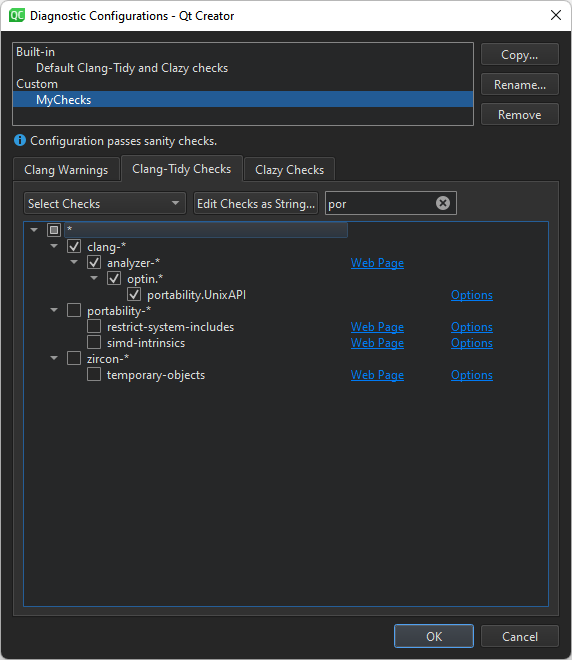

Configure Clang diagnostics
Detect problems in C, C++, and Objective-C programs with Clang-Tidy and Clazy.
To select and edit the Clang checks to perform:
- Select Preferences > Analyzer > Clang Tools.
- The Diagnostic configuration field shows the checks to perform. Click the value of the field to open the Diagnostic Configurations dialog, where you can select and edit the checks to perform.

To perform checks from a Clang-Tidy configuration file instead, select Prefer .clang-tidy file, if present in the Clang Tools tab.
- Select Copy to copy the selected diagnostics for editing.

- In the Diagnostic configuration name field, give the configuration a name, and then select OK.
- In the Clang Warnings tab, select the Use diagnostic flags from the build system check box to forward diagnostic flags, such as warning flags, from the build system to the Clang code model for displaying annotations in the code editor.
- In the Clang-Tidy Checks tab, select Select Checks to select the checks to perform. To filter the checks, enter a string in the Filter by name field.

For more information about the available checkers, see Clang Static Analyzer documentation.
- To edit the selected checks as plain text, select Edit Checks as String.
- In the Clazy Checks tab, select the level of Clazy checks to perform.
- To edit the selected checks as plain text, select Edit Checks as String.
- In the Filters field, select topics to view only checks related to those areas in the Checks field. To filter the checks in the selected areas, enter a string in the Filter by name field.
- To view all checks again, select Reset Topic Filter.
- To view more information about the checks online, select the Web Page links next to them.
Suppressing Diagnostics
To suppress diagnostics, select Suppress This Diagnostic in the context menu. To view the suppression list for a project and to remove diagnostics from it, select Projects > Project Settings > Clang Tools.
Selecting Clazy Check Levels
The Clazy checks are divided into levels from 0 to 3. The checks at level 0 are very stable and show hardly any false positives, while the checks at level 3 are experimental. You can select the checks to perform at each level. To include the checks from the lower levels automatically, select the Enable lower levels automatically check box.
Creating Clang-Tidy Configuration Files
Clang-Tidy reads the configuration for each source file from a .clang-tidy file located in the closest parent directory of the source file. If any configuration options have a corresponding command-line option, the command-line option takes precedence. The effective configuration can be inspected using -dump-config.
Qt Creator creates the configuration for you based on the checks you select. To store the checks in file format, you can create a .clang-tidy file, as follows:
- Select Edit Checks as String and copy the contents of the field.
- Pipe the output of
clang-tidy -dump-configinto a file named.clang-tidy. For example:clang-tidy -checks=-*,bugprone-*,cppcoreguidelines-avoid-* -dump-config > .clang-tidy - Move the .clang-tidy file to the parent directory of the sources.
To add more checks using Qt Creator later on, copy the checks from your .clang-tidy file into the Edit Checks as String field, select additional checks, and copy-paste the contents of the field to the .clang-tidy file.
See also Analyze code with Clang-Tidy and Clazy, Specify Clang tools settings, and Clang Tools.